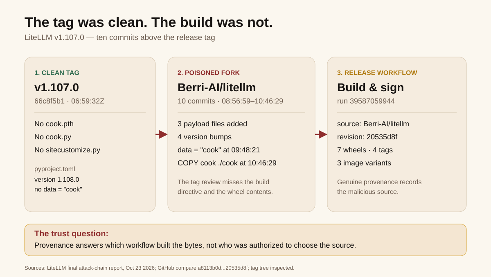
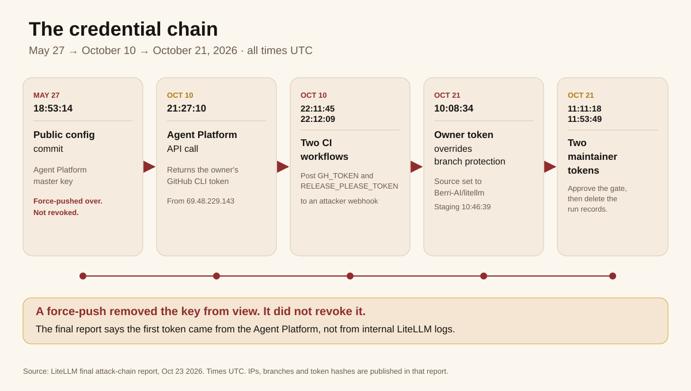
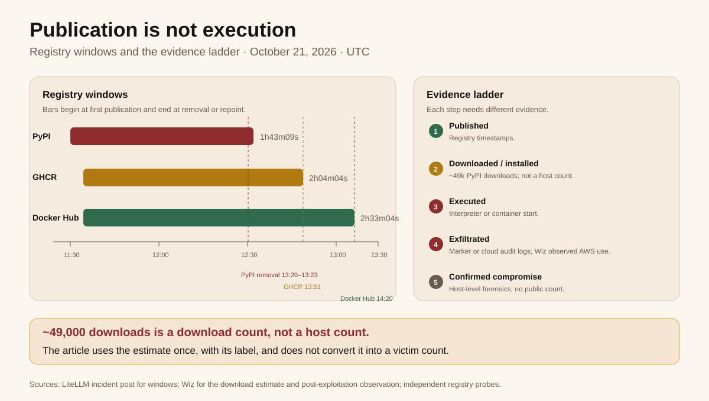

1. The Tag Was Clean. The Build Was Not.
The v1.107.0 tag in LiteLLM's GitHub repository contains no credential stealer. The release that reached PyPI does. Between those two statements sits the failure this audit is about: a release pipeline that had been hardened after an earlier compromise, then built from a source tree the maintainers did not intend, signed the result, and published it with genuine provenance.
LiteLLM's first public account, on October 21, reconstructed the release abuse and speculated that the attacker had taken GitHub tokens from the logs of an internal LiteLLM deployment. Two days later, the company published a canonical final report that corrected that part of the story. The request logs showed the first token came from a different service: an internal Agent Platform that had been holding an organization owner's GitHub CLI token.
The correction matters. It moves the root cause from a log-exposure hypothesis to a credential-lifecycle failure that began on May 27, when a configuration file containing the Agent Platform's master key was committed to a public repository. The commit was force-pushed over, the error was noticed, and the key was identified for revocation. The revocation did not happen. The key was still valid when the attacker used it in October.
Those are separate chains, and this article keeps them separate. The release chain has commit hashes, registry windows, and independent corroboration. The credential chain now has exact timestamps, IP addresses, branch names, and a vendor reconstruction of audit-log events. The final report says it can confidently assert the timeline and sequence that led to the malicious release. That is a stronger claim than the first post made, and it is the one this audit uses for the acquisition path.
Three distinctions still organize the evidence. Publication is not installation. Installation is not execution. Execution is not confirmed exfiltration. Most supply-chain coverage collapses that ladder into a headline about downloads. This audit keeps the rungs visible.
The tagged commit 66c8f5b1 is dated 06:59:32 UTC on October 21. A legitimate main commit, a8113b0d, followed at 08:50. The payload sits in ten commits stacked above that legitimate commit in Berri-AI/litellm, a repository whose name differs from the real BerriAI/litellm by one hyphen. GitHub's compare API returns exactly ten commits between a8113b0d and 20535d8f, the revision the build consumed. The first three commits, all within two minutes, added cook.pth, cook.py, and sitecustomize.py. Four version-bump commits made the tree look like a routine release. Two later commits refined the loader and added data = "cook" to pyproject.toml. The last added COPY cook ./cook to the Dockerfiles.
That one build directive explains the wheel delivery. The tagged pyproject.toml does not contain data = "cook". The build that produced the wheels did. Maturin, the build backend, interpreted the directive as an instruction to copy the cook directory into the wheel's data directory. Pip then installed those files at the root of site-packages, where Python treats them as startup hooks. Reviewing the tag alone would not show the change. Reviewing the release diff would.
The container provenance is equally direct. The build metadata records the private BerriAI/project-releaser workflow, run 39587059944, with the source owner set to Berri-AI and the source revision set to 20535d8f. The provenance for v1.106.2 records the legitimate BerriAI/litellm. The recorded build inputs accurately describe a build from the attacker's repository. That is the uncomfortable part: provenance did what provenance is supposed to do, and the artifact was still malicious because the source input was attacker-controlled.

data = "cook" build directive. Source: LiteLLM final attack-chain report; GitHub compare a8113b0d...20535d8f.2. What Shipped
The release contained seven platform wheels and an sdist. All seven wheels carried the same three payload files. The sdist did not contain the payload files, but its pyproject.toml carried the same added data = "cook" directive that bundled them into the wheels. The files were small: a 12-byte cook.pth, a 22,252-byte cook.py, and a 25,509-byte sitecustomize.py. The sizes matter less than their location and trigger.
Python processes .pth files and sitecustomize.py at interpreter startup. cook.pth contains one instruction, import cook, so any Python process in the affected environment runs the stealer without importing LiteLLM. Uninstalling the litellm package does not remove the files from site-packages. Running pip in that environment starts Python again and triggers them again. This is why the vendor's remediation starts with deleting the files from the shell, not with pip uninstall.
The stealer, which calls itself privcollect, targets browser credentials and cookies, SSH and GPG keys, cloud credentials, CI/CD secrets, AI-tool configuration, and, on Linux, the environment of every readable process. It also looks for DATABASE_URL and queries the LiteLLM proxy database for LiteLLM_CredentialsTable and LiteLLM_ProxyModelTable. That last target turns a single compromised proxy host into a multi-provider key exposure. The stolen bundle is encrypted with AES-256-CBC, the key is wrapped with RSA-4096, and the archive is posted over plain HTTP to www.litellm.dev/healthcheck, a lookalike domain that is not the project's litellm.ai.
A second copy of the stealer sits inline in sitecustomize.py, behind a dead-drop check. Every hour the script reads a domain from a GitHub repository and, if one is present, fetches and executes code from it. The dead-drop file was empty from October 20 at 09:15:14 UTC through the public analysis, and no second-stage execution was observed. The GitHub repository was taken down. That is evidence of dormancy, not proof that the mechanism was harmless; one commit to the dead-drop could have re-armed every infected host.
This audit describes the payload at this level because the remediation depends on understanding the startup hook and the uninstall gap. It does not reproduce code, commands, or operational recovery steps beyond what the vendor and independent analyses have already published for defenders.
| State | What the evidence requires | What the record shows |
|---|---|---|
| Published | Registry timestamps | PyPI, GHCR, and Docker Hub served the malicious artifacts during the windows in section 5. |
| Downloaded or installed | Download counts, pull logs, dependency resolution | About 49,000 PyPI downloads of the malicious version, a third-party estimate from ClickPy cited by Wiz. Docker pull counts are not public. |
| Executed | Interpreter or container start on a host | The payload runs on any Python start. Wiz's post-exploitation observation implies execution in some environments. The number is unknown. |
| Exfiltrated | Marker file, EDR telemetry, cloud audit logs | Wiz observed AWS instance-role credential validation in specific environments. No host's marker file is public. Scope is unknown. |
| Confirmed compromise | Host-level forensic confirmation | Not public. No host count should be asserted. |
3. The Release Workflow Was the Trust Boundary
LiteLLM's normal release flow was designed to make a bad publish hard. Releases live in a private repository. A strict set of workflows creates artifacts through Trusted GitHub Publishers. Docker tags are immutable, and images are signed. Building and publishing normally requires an authorized engineer to trigger the release and a special account locked to a physical device in the office to approve it. Those are real controls, and the incident is worth reading as a study of where they stopped mattering.
The final report adds a detail the first account did not emphasize: the approval restriction had been relaxed earlier that week to accommodate a push for more frequent releases and bugfix backports. Any two engineers could trigger and approve a release. That relaxation did not create the compromise, but it widened the set of identities that could complete one.
On October 21, the attacker used three compromised GitHub token sets. The second maintainer's token pushed commit 9cf97e9 to main of BerriAI/project-releaser at 10:08:29. Branch protection rejected it because the change had not passed a pull request, two checks, and codeowner approval. Five seconds later, the organization owner's token disabled branch protection and force-pushed the same change. The owner's token then dispatched the staging workflow at 10:46:39 with the source set to Berri-AI/litellm at 20535d8f.
Staging finished at 11:08:09. The production pipeline started at 11:08:53. The second maintainer's token approved the production gate at 11:11:18 from 199.91.221.39. Seven wheels reached PyPI between 11:39:51 and 11:40:13. Docker Hub and GHCR images were published at 11:46:56. At 11:53:49, the third maintainer's token deleted the production run record. At 11:54:01, it deleted the staging run record. Both deletions removed the workflow logs from the repository.
The attacker was not finished. With the owner's token, they pushed a revert, 285fbdc5, at 12:09:38. At 12:24:52, they force-pushed main back to d687b69, the commit before the change, overriding GitHub's force-push block. The visible history then showed neither the change nor the revert. Both commits remain retrievable by SHA, and the organization audit log recorded each override.
The sequence has a clean division of labor: one identity changed the release source, another approved the production gate, and a third erased the run records. LiteLLM believes the attacker used separate tokens to reduce the noise in the audit logs, although the organization-owner token could have been used to relax the approval restriction directly. That is the control failure in one sentence: branch protection, required reviews, and production gates are identity checks. If the identities are compromised, the checks still ask the same question and still get the same answer.
| Time (UTC) | Event | What it establishes |
|---|---|---|
| May 27, 18:53:14 | Agent Platform master key committed to a public repository | The credential chain starts months before the release. |
| Oct 10, 21:27:10 | Agent Platform API returns the owner's GitHub CLI token | The attacker obtains organization-owner access. |
| Oct 10, 22:11:45 and 22:12:09 | Throwaway CI workflows post GH_TOKEN and RELEASE_PLEASE_TOKEN to an attacker endpoint | Two maintainer tokens are exfiltrated. |
| Oct 21, 10:08:29 / 10:08:34 | Second maintainer's push rejected; owner's token overrides branch protection | The release workflow is repointed at the fork. |
| Oct 21, 10:46:39 | Staging run dispatched with source Berri-AI/litellm at 20535d8f | The build consumes attacker-controlled source. |
| Oct 21, 11:11:18 | Second maintainer's token approves the production gate | The approval gate is satisfied by a compromised identity. |
| Oct 21, 11:39:51–11:40:13 | Seven wheels uploaded to PyPI | The malicious package is public. |
| Oct 21, 11:46:56 | Container publication | The compromised images are tagged. |
| Oct 21, 11:53:49–11:54:01 | Third maintainer's token deletes production and staging run records | The audit trail is removed after publication. |
| Oct 21, 12:09:38–12:24:52 | Owner's token pushes a revert, then force-pushes main back | The visible workflow history is cleaned after publication. |
4. How the Credentials Were Taken
The final report's credential chain is more concrete than the first account. On May 27, 2026 at 18:53:14 UTC, a configuration file, opencode.json, was committed to the public LiteLLM-Labs/lite-harness repository. It contained the master key for LiteLLM's Agent Platform, an internal alpha service used for orchestrating agents. The error was identified quickly and the commit was force-pushed over. The exposed keys were identified as requiring revocation. The master key was not revoked.
The Agent Platform was configured with a GitHub authentication token so its agents could file pull requests. That token was not associated with a service account and was not scoped down. It was a GitHub CLI OAuth token belonging to one of LiteLLM's two GitHub organization owners. On October 10, between 21:13 and 21:28 UTC, the attacker called the Agent Platform API from 69.48.229.143. At 21:27:10, a request to GET /api/v1/managed_agents/agents?limit=100 returned the owner's token.
From there, the attacker used the owner's access to turn LiteLLM's own CI into an exfiltration channel. At 22:11:45, a workflow on a throwaway branch, ci-tmp-a351cc, in BerriAI/litellm posted six repository secrets to an attacker-controlled webhook.site endpoint. One of them, GH_TOKEN, held the GitHub CLI OAuth token of a second maintainer. Twenty-four seconds later, a workflow on ci-tmp-be33e9 in BerriAI/litellm-auto posted RELEASE_PLEASE_TOKEN, which held a third maintainer's token. The attacker deleted both run records at 22:14:14 and 22:14:31 using the owner's token.
The final report supersedes that hypothesis: the request logs show the first token came from the Agent Platform, not from the logs of an internal LiteLLM deployment. That correction is the most important difference between the two accounts. It does not change the artifact story, but it changes the root cause from a logging accident to a secret that was exposed in public and never revoked.
The three credentials map cleanly to the release sequence. The owner's token changed the workflow and dispatched the staging build. The second maintainer's token approved the production gate. The third maintainer's token deleted the run records. The final report says the attacker also acquired tokens to several other internal systems and focused on upstream inference API tokens. It says LiteLLM has traced all tokens it believes the attacker could have accessed and is revoking every token associated with every internal system and vendor platform. That is a vendor assertion about scope, not an independent audit.
The acquisition path is now documented, but the evidence remains vendor-authored. The IP addresses, branch names, commits, and token hashes come from LiteLLM's audit logs. No independent party has published a full reconstruction of those logs. The article can state the sequence because the final report states it, and can label the scope claim as LiteLLM's.

5. The Windows: Published, Installed, Executed, Exfiltrated
The registry windows are close enough to reconstruct and far enough apart to require care. LiteLLM's own timeline gives PyPI a window of 11:39:51 to 13:23 UTC. Wiz says PyPI quarantined the release at 13:20. The difference is three minutes; this audit reports both rather than choosing one. GHCR was unavailable by 13:51 according to LiteLLM, while Wiz describes container removal at about 13:53. Docker Hub is the widest window: 11:46:56 to 14:20, or 2 hours 33 minutes and 4 seconds. Upwind's registry analysis gives a Docker Hub push at 11:48, one minute later than LiteLLM's timeline. Those are small discrepancies, but they are the kind a forensic article should show instead of smoothing away.
| Channel | Window (UTC) | Duration | Corroboration and discrepancy |
|---|---|---|---|
| PyPI wheels | 11:39:51–13:23 | 1h43m09s (LiteLLM); 1h40m09s to Wiz's 13:20 quarantine | LiteLLM says 13:23; Wiz says 13:20. Our PyPI probe now returns 404 for 1.107.0 and 200 for 1.106.2. |
| GHCR, three variants | 11:46:56–13:51 | 2h04m04s | LiteLLM says 13:51; Wiz says about 13:53. |
| Docker Hub | 11:46:56–14:20 | 2h33m04s | LiteLLM says 14:20; Upwind says the image was pushed at 11:48. |
| Build provenance | Run 39587059944, 10:51:23–11:06:31 | 15m08s | Upwind and Socket report the same run and source revision. |
The state ladder matters more than the durations. A pull is not an execution. Wiz's payload description and a public local reproduction in issue #47826 agree that docker pull moves bytes and unpacks layers; it does not start a Python interpreter. A container starts the payload when it runs, and a host starts it when any Python process begins in the affected environment. That is why the practical question for an operator is not “did I download it?” but “did this environment ever start Python after the install?”
Wiz adds an observation that moves the story past publication without establishing a host count. Wiz says it observed abuse of stolen credentials beginning about 4.5 hours after exfiltration. Between 16:20 and 17:01 UTC, the attacker validated AWS instance-role credentials from two IP addresses with sts:GetCallerIdentity, then called Bedrock model-listing APIs, consistent with LLMjacking. In a small number of environments, Wiz also observed IAM enumeration and general discovery. That is independent evidence that some credentials were used. It is not a count of compromised hosts, and it does not prove that every download executed or exfiltrated.
The download estimate gets the same treatment. Wiz cites ClickPy data showing about 49,000 downloads of the malicious version. That number is useful for scale and useless for impact. It counts downloads, not installations; installations, not executions; executions, not successful exfiltration. It is labeled as a download estimate and is not converted into a victim count.

6. The Second Compromise
This was LiteLLM's second compromise of 2026. The earlier incident involved versions 1.82.7 and 1.82.8. Datadog Security Labs linked that incident to TeamPCP activity and says no connection between the two compromises has been established. The October actor is not publicly identified. The two incidents should not be merged into a single campaign.
LiteLLM says it hardened its release pipeline after March. It moved releases to a private repository, adopted Trusted GitHub Publishers, made Docker tags immutable, and began signing images. Those changes raised the cost of a naive publish. They did not remove the trust boundary that mattered here: an organization-owner credential could still change the workflow's source input, and the workflow could still build and sign the result. The hardening was real, and the failure was above it.
The final report says the process improvements will be shared next week. Until they are published, this audit does not assume them. What is visible is the shape of the failure: a long-lived credential that survived a public exposure, a release pipeline that trusted its source input, and an approval model that had been relaxed for speed.
7. Established, Asserted, Unresolved
| Established by the public record, including LiteLLM's audit-log reconstruction | Asserted by LiteLLM, not independently confirmed | Unresolved |
|---|---|---|
| The Agent Platform master key was committed to a public repository on May 27, 2026 and was not revoked. | LiteLLM has traced all tokens it believes the attacker could have accessed. | Whether every exfiltrated token and key is accounted for. |
| On October 10, the Agent Platform API returned the organization owner's GitHub CLI token. | Every token associated with every internal system and vendor platform is being revoked. | Whether the revocation is complete and independently verified. |
| Two throwaway CI workflows exfiltrated the second and third maintainers' tokens. | The private enterprise registry was unaffected. | The number of hosts that installed, executed, or exfiltrated. |
The release workflow was repointed at Berri-AI/litellm; the clean tag did not contain the payload. | Process improvements will be published next week. | Whether every one of the six image builds was byte-identical to the inspected image. |
| The owner's token overrode branch protection; the second maintainer approved; the third deleted run records; the owner force-pushed the history clean. | The published GitHub audit-log hashes match the tokens used in the release. | Whether the second-stage dead-drop was ever armed. |
| The payload runs at Python startup and targets credentials, including the proxy database. | Whether any downstream use occurred beyond Wiz's observed environments. |
The October 10 and October 21 rows in the first column come from LiteLLM's audit-log reconstruction. Independent parties corroborate parts of the artifact chain, not the full log. Five non-claims follow from the table. The record does not identify the October actor. It does not establish a host or victim count. It does not establish that all six image builds were byte-verified; only one amd64 image's file contents were inspected, while provenance for all six records the same malicious revision. It does not establish that the final report's audit-log reconstruction has been independently reproduced. And the second stage was dormant in the observed record, not deployed.
The October 21 post is still useful for artifact windows, cleanup guidance, and the detection timeline. It is not the canonical account of how the credentials were taken. That part changed, and the article follows the final report. A reader who saw only the first post would have the right artifact list and an incomplete root cause.
8. Guardrails Tied to This Failure
The useful controls are the ones that map to a specific step in this chain, not a generic list of supply-chain advice.
Revoke exposed secrets; do not just erase them. The master key was committed to a public repository in May, force-pushed out of the visible history, and left valid. A force-push changes history; it does not invalidate a credential. Secret scanning should open a revocation ticket automatically, and the ticket should close only when the key is dead.
Do not put an organization owner's CLI token inside a service. The Agent Platform held a GitHub CLI OAuth token that was not a service account and was not scoped down. A service that files pull requests needs a dedicated identity with the narrowest repository and action scope, not an owner's token with access to every repository.
Keep release approval controls, even during a release push. The final report says the laptop-locked approval requirement was relaxed earlier that week so any two engineers could trigger and approve. Temporary relaxations need an expiry, a compensating control, and a review. Two-person approval is weaker if both identities can be stolen from the same CI surface.
Scope CI secrets away from arbitrary workflows. The second and third tokens were stored as repository secrets, GH_TOKEN and RELEASE_PLEASE_TOKEN. A throwaway branch could run a workflow that posted them to an external endpoint. Secrets that can approve or delete releases should be environment-scoped, restricted to protected branches, and unavailable to ad hoc workflow runs.
Constrain the source repository as a release input. The workflow accepted a source owner from a dispatch input. A one-character difference between BerriAI and Berri-AI should fail closed against an allowlist. Changing the source should require a separate, two-person authorization, not a routine release parameter.
Diff the built tree against the tag. The data = "cook" line and the three extra wheel files were visible in the build tree. A release gate that compares wheel contents and build metadata against the tagged source would have caught the packaging change even though the tag itself was clean.
Treat startup hooks as high-signal anomalies. A wheel that installs .pth files or sitecustomize.py at the root of site-packages is doing something most packages never do. Registry and CI scanners should flag that pattern before publication, not after a download spike.
Keep an audit trail outside the attacker's reach. The third maintainer's token deleted the production and staging run records, and the owner's token force-pushed the visible workflow history clean. Organization audit logs and release records should be exported to a separate system that repository-level credentials cannot delete.
Separate the proxy's credential store from the proxy host. The LiteLLM proxy database held upstream provider keys. A host compromise therefore became a multi-provider key compromise. The database should have its own access boundary, encryption, and rotation path, and it should not be reachable from the same process environment that runs the release artifact.
Give defenders an uninstall path that works. Telling users to run pip uninstall litellm is insufficient when the payload lives outside the package. The cleanup guidance must start with the startup files, then rebuild the environment, then rotate credentials. The vendor's own guidance does this; downstream runbooks should copy the order, not just the version pin.
9. Verdict: The Source Was the Vulnerability
The LiteLLM incident is not best understood as a signing failure or a provenance failure. The artifacts were signed by the release workflow. The provenance was accurate. The failure was that the workflow's source input could be changed by a compromised organization-owner credential, and the resulting build was indistinguishable from a legitimate one to signature-and-provenance checks.
That is why the clean tag matters. It shows how much of the usual supply-chain advice assumes the wrong boundary. “Review the tag” would have missed the payload. “Verify the signature” would have passed. “Check the provenance” would have shown the attacker's repository and still described a real build. The control that would have changed the outcome sits earlier: constrain who can choose the source, and verify that choice independently of the identity that publishes.
The credential chain adds the older failure. A master key was exposed in public in May, force-pushed out of view, and never revoked. Four months later it returned an owner's GitHub CLI token, and two throwaway CI jobs turned that access into the maintainer tokens needed to approve and erase a release. The final report closes the acquisition question that the first post left open. It does not close the impact question: no host count, no complete downstream scope, and no independent audit of the vendor's log reconstruction.
A clean tag, genuine build provenance, and a valid release process were not sufficient because the source consumed by the build was attacker-controlled. The credential that controlled the source had been exposed for months. That is the failure to fix.
Sources and Method
Primary sources are LiteLLM's canonical final report (October 23, 2026, 21:00 UTC), its October 21 incident post for artifact windows and remediation, and GitHub issue #47826 for detection and later updates. The commit chain was checked with GitHub's compare API for a8113b0d...20535d8f, which returned ten commits with the timestamps used here. The tag and attack trees were checked directly: the tag contains none of the three payload paths, while commit 20535d8f contains cook.pth (12 bytes), cook.py (22,252 bytes), and sitecustomize.py (25,509 bytes); the tag's pyproject.toml has version 1.108.0 and no data = "cook", while the attack commit has 1.107.0 and data = "cook". PyPI's JSON API now returns 404 for 1.107.0 and 200 with eight files for 1.106.2; the lookalike repository returns 404. Independent analysis comes from Wiz, Datadog Security Labs, Socket, StepSecurity, Chainguard, and the OSSF malicious-packages PR. Those sources are used for corroboration and for their own observations, not as proof of LiteLLM's hypotheses.
The exposure arithmetic is simple and worth showing. PyPI: 13:23 minus 11:39:51 is 1 hour 43 minutes 9 seconds; 13:20 minus 11:39:51 is 1 hour 40 minutes 9 seconds. GHCR: 13:51 minus 11:46:56 is 2 hours 4 minutes 4 seconds. Docker Hub: 14:20 minus 11:46:56 is 2 hours 33 minutes 4 seconds. The build run is 10:51:23 to 11:06:31, or 15 minutes 8 seconds. The 49,000 figure is a third-party download estimate, not a host count.
Discrepancies are reported rather than resolved: PyPI removal at 13:20 (Wiz) versus 13:23 (LiteLLM); GHCR unavailability at 13:51 (LiteLLM) versus about 13:53 (Wiz); Docker Hub push at 11:46:56 (LiteLLM) versus 11:48 (Upwind); and the download estimate, which measures downloads rather than executions. The October 21 post's internal-deployment/log hypothesis is superseded by the final report; the final report says the request logs show the first token came from the Agent Platform. This audit does not claim independent reproduction of the payload. No payload was downloaded or executed. The vendor's final report is the canonical account, but its audit-log reconstruction has not been independently reproduced.
- LiteLLM: The attack chain behind the v1.107.0 release (Oct 23, 2026, 21:00 UTC)
- LiteLLM: Contained — Oct 21, 2026 LiteLLM release v1.107.0 compromised (updated Oct 21, 2026 20:30 UTC)
- GitHub issue #47826: litellm 1.107.0 compromised (Upwind report and LiteLLM updates)
- GitHub compare: a8113b0d...20535d8f (ten commits)
- Wiz: LiteLLM compromised, steals credentials (Oct 21, 2026; updated Oct 22)
- Datadog Security Labs: LiteLLM supply chain compromise (Oct 21, 2026)
- Socket: LiteLLM PyPI package and Docker images compromised (Oct 21, 2026)
- StepSecurity: litellm 1.107.0 compromised on PyPI (Oct 21, 2026)
- Chainguard: LiteLLM attacked again (Oct 21, 2026)
- OSSF malicious-packages PR #1655 (Oct 21, 2026)
- Buildopsy: 500 Malicious Packages — the RubyGems prequel
- Buildopsy: Slopsquatting — when AI invents the package you install
- Buildopsy: Claude thought it was a simulation — the PyPI upload
- Buildopsy: Cloudflare R2 credential rotation outage
- Buildopsy course: AI security and agent egress